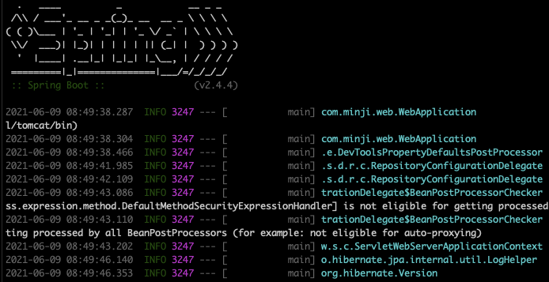
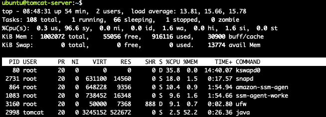
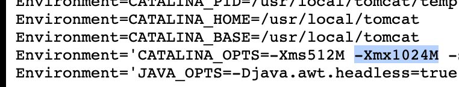

[ Amazon Web Services ]
AWS 스프링부트 프로젝트 배포 시 느려지는 현상
그리고 해결

엄청 느려지는 상황...

남은 메모리가 별로 없는 상황이었다.
그래서 그렇게 느렸던 것..
vi /etc/systemd/system/tomcat.service
이 경로에,

JVM 의 초기 메모리와 최대 메모리 설정 부분을 512로 수정한다.
참고로 서비스 파일은 다음과 같음.
https://www.lesstif.com/java/tomcat-windows-service-4849668.html
Java Java Web Application Server(tomcat, jetty, JBoss 등) Current: 톰캣(tomcat)을 윈도 서비스(Windows Service)에 등록하고 설정 변경하기 톰캣(tomcat)을 윈도 서비스(Windows Service)에 등록하고 설정 변경하기 개요 윈도용 톰캣 7을 다운받으면 안에 tomcat7.exe 와 tomcat7w.exe 파일이 있다. (톰캣6 은 tomcat6.exe, tomcat6w.exe) 각각의 용도는 다음과 같다. tomcat7.exe - Tomcat7 을 NT ...
www.lesstif.com